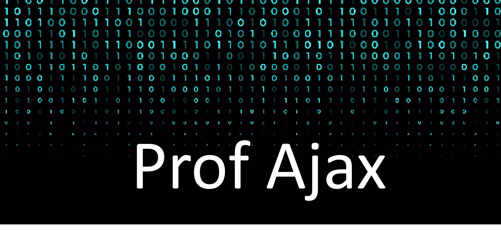

Python é uma linguagem de programação de alto nível,[10] interpretada de script, imperativa, orientada a objetos, funcional, de tipagem dinâmica e forte. Foi lançada por Guido van Rossum em 1991.[1] Atualmente, possui um modelo de desenvolvimento comunitário, aberto e gerenciado pela organização sem fins lucrativos Python Software Foundation. Apesar de várias partes da linguagem possuírem padrões e especificações formais, a linguagem, como um todo, não é formalmente especificada. O padrão na pratica é a implementação CPython.
O Oracle Java é a linguagem de programação e plataforma de desenvolvimento n.º 1 Ele reduz custos, abrevia cronogramas de desenvolvimento, motiva a inovação e melhora os serviços de aplicativos. O Java continua a ser a plataforma de desenvolvimento preferida de empresas e desenvolvedores.
As primeiras lições explicam os conceitos de C# usando pequenos snippets de código. Você aprenderá os conceitos básicos da sintaxe C# e como trabalhar com tipos de dados, como cadeias de caracteres, números e boolianos. É tudo interativo e você escreverá e executará código em poucos minutos. Essas primeiras lições não pressupõem nenhum conhecimento prévio sobre programação ou a linguagem C#.
R is a free software environment for statistical computing and graphics. It compiles and runs on a wide variety of UNIX platforms, Windows and MacOS. To download R, please choose your preferred CRAN mirror.